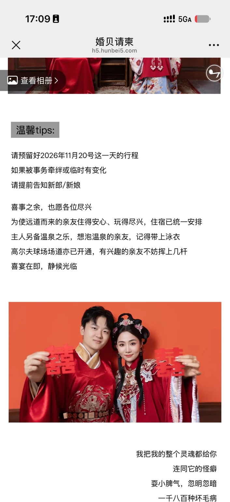

重庆庆隆圣马丁大教堂
重庆市南岸区
庆隆·南山高尔夫国际社区内
THE WEDDING OF KELAN & QIAN
罗柯岚&张倩
一场为数不多的相聚，
想与你分享，人生中温柔而郑重的一天。
A LITTLE LETTER TO YOU
以前觉得，婚礼是一则正式的公告。
现在才明白，
是千里迢迢的奔赴，是不计得失的支持，
是终于可以说出口的那句——
WHERE WE MEET
从教堂的誓言，到宴席间的举杯。
愿你一路从容，安心赴约。
重庆市南岸区
庆隆·南山高尔夫国际社区内
重庆市南岸区南坪镇茶园新区
玉马路 1 号
教堂仪式结束后，可自行驾车或乘坐酒店接驳车前往午宴地点。
车程约 5 分钟，步行约 15 分钟；实际用时以当日路况为准，接驳请留意现场引导。
THE ORDER OF THE DAY
2026 年 11 月 20 日 · 星期五
庆隆圣马丁大教堂。
仪式期间，请将手机调至静音。
自行驾车或乘坐酒店接驳车，
前往高尔夫球会一楼宴会厅。
敞开胃口，开席相聚。
与我们共享喜悦，与老友好好叙旧。
FIND YOUR SEAT
桌号与宴会厅座位示意图将在婚礼前更新。
到场后，也可以向迎宾人员询问。
THE WEDDING MENU
以一席心意，款待每一份远道而来。
菜品确认后，将在这里与你分享。
LOVE, ACROSS TIME
翻开两张卡片，找到同一个时空。每配对一组，就解锁一张我们的时空合影。集齐三段旅程，送我们一份跨越时空的祝福。
先翻开一张卡片，看看缘分藏在哪里。
若在大理石廊柱下相遇，
也会为你，停下脚步。
把未说完的喜欢，
写进玻璃花房里的每一封信。
就算城市换了模样，
想一起走向未来的人，还是你。
时空合影为 AI 创意演绎；真实婚礼信息以本页地点、流程为准。

MAKE YOURSELF AT HOME
给远道而来的你，
准备了一份小小的赴约指南。
为使远道而来的亲友住得安心、玩得尽兴，住宿已统一安排。具体酒店、入住时间及房间安排，请与新人确认。
另备温泉之乐，想泡温泉的亲友，记得带上泳衣。具体开放时间及使用安排，以现场说明为准。
高尔夫球场场道亦已开通，有兴趣的亲友不妨挥上几杆。具体体验时段与安排，请向新人或现场工作人员询问。
请预留好 2026 年 11 月 20 日这一天的行程。如临时有变化，请提前告知新郎或新娘。仪式期间请将手机调至静音，拍摄时留意现场指引。